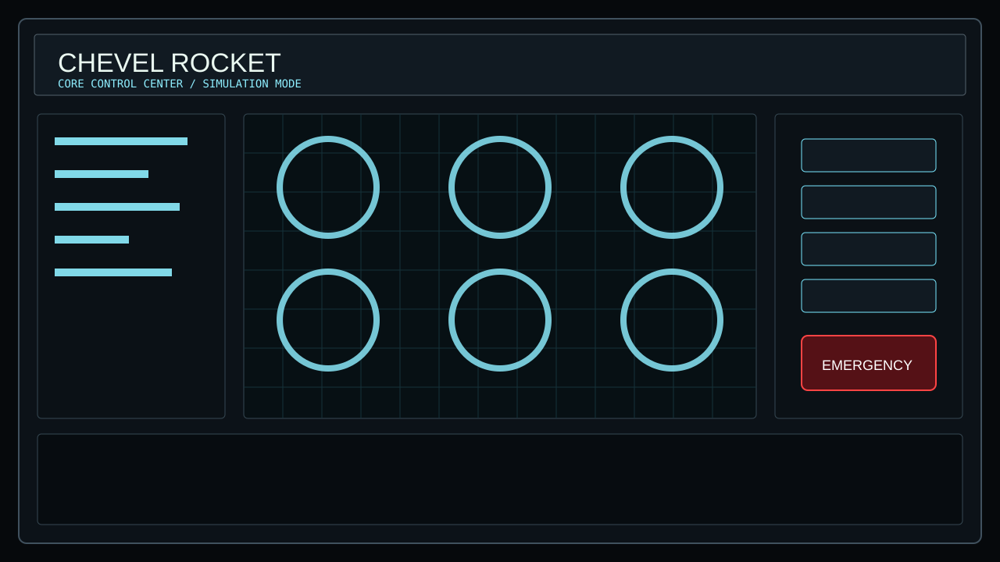

CHEVEL CORE / NATIVE QT CONTROL SURFACE
CHEVEL ROCKET
Mission-control cockpit for robot telemetry, simulation commands, emergency safety and future CHEVEL AI integration.

O navegador e so o portal.
O painel real nao roda dentro do browser: ele abre como software
nativo em build\ChevelRobotControlCenter.exe. Use o
botao acima ou execute run-chevel-rocket.bat.